scipy.spatial.distance.pdist¶
- scipy.spatial.distance.pdist(X, metric='euclidean', p=2, w=None, V=None, VI=None)[source]¶
Pairwise distances between observations in n-dimensional space.
The following are common calling conventions.
Y = pdist(X, 'euclidean')
Computes the distance between m points using Euclidean distance (2-norm) as the distance metric between the points. The points are arranged as m n-dimensional row vectors in the matrix X.
Y = pdist(X, 'minkowski', p)
Computes the distances using the Minkowski distance 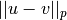 (p-norm) where 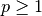.
Y = pdist(X, 'cityblock')
Computes the city block or Manhattan distance between the points.
Y = pdist(X, 'seuclidean', V=None)
Computes the standardized Euclidean distance. The standardized Euclidean distance between two n-vectors u and v is
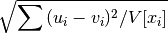
V is the variance vector; V[i] is the variance computed over all the i’th components of the points. If not passed, it is automatically computed.
Y = pdist(X, 'sqeuclidean')
Computes the squared Euclidean distance 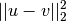 between the vectors.
Y = pdist(X, 'cosine')
Computes the cosine distance between vectors u and v,
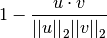
where 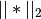 is the 2-norm of its argument *, and 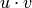 is the dot product of u and v.
Y = pdist(X, 'correlation')
Computes the correlation distance between vectors u and v. This is
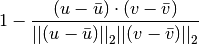
where 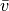 is the mean of the elements of vector v, and 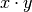 is the dot product of
 and 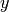.
and 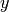.Y = pdist(X, 'hamming')
Computes the normalized Hamming distance, or the proportion of those vector elements between two n-vectors u and v which disagree. To save memory, the matrix X can be of type boolean.
Y = pdist(X, 'jaccard')
Computes the Jaccard distance between the points. Given two vectors, u and v, the Jaccard distance is the proportion of those elements u[i] and v[i] that disagree where at least one of them is non-zero.
Y = pdist(X, 'chebyshev')
Computes the Chebyshev distance between the points. The Chebyshev distance between two n-vectors u and v is the maximum norm-1 distance between their respective elements. More precisely, the distance is given by
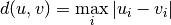
- Y = pdist(X, 'canberra')
Computes the Canberra distance between the points. The Canberra distance between two points u and v is
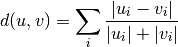
- Y = pdist(X, 'braycurtis')
Computes the Bray-Curtis distance between the points. The Bray-Curtis distance between two points u and v is
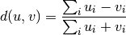
- Y = pdist(X, 'mahalanobis', VI=None)
Computes the Mahalanobis distance between the points. The Mahalanobis distance between two points u and v is 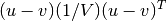 where 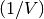 (the VI variable) is the inverse covariance. If VI is not None, VI will be used as the inverse covariance matrix.- Y = pdist(X, 'yule')
Computes the Yule distance between each pair of boolean vectors. (see yule function documentation)- Y = pdist(X, 'matching')
Computes the matching distance between each pair of boolean vectors. (see matching function documentation)- Y = pdist(X, 'dice')
Computes the Dice distance between each pair of boolean vectors. (see dice function documentation)- Y = pdist(X, 'kulsinski')
Computes the Kulsinski distance between each pair of boolean vectors. (see kulsinski function documentation)- Y = pdist(X, 'rogerstanimoto')
Computes the Rogers-Tanimoto distance between each pair of boolean vectors. (see rogerstanimoto function documentation)- Y = pdist(X, 'russellrao')
Computes the Russell-Rao distance between each pair of boolean vectors. (see russellrao function documentation)- Y = pdist(X, 'sokalmichener')
Computes the Sokal-Michener distance between each pair of boolean vectors. (see sokalmichener function documentation)- Y = pdist(X, 'sokalsneath')
Computes the Sokal-Sneath distance between each pair of boolean vectors. (see sokalsneath function documentation)- Y = pdist(X, 'wminkowski')
Computes the weighted Minkowski distance between each pair of vectors. (see wminkowski function documentation)- Y = pdist(X, f)
Computes the distance between all pairs of vectors in X using the user supplied 2-arity function f. For example, Euclidean distance between the vectors could be computed as follows:
dm = pdist(X, lambda u, v: np.sqrt(((u-v)**2).sum()))
Note that you should avoid passing a reference to one of the distance functions defined in this library. For example,:
dm = pdist(X, sokalsneath)
would calculate the pair-wise distances between the vectors in X using the Python function sokalsneath. This would result in sokalsneath being called
 times, which
is inefficient. Instead, the optimized C version is more
efficient, and we call it using the following syntax.:
times, which
is inefficient. Instead, the optimized C version is more
efficient, and we call it using the following syntax.:dm = pdist(X, 'sokalsneath')
Parameters : X : ndarray
An m by n array of m original observations in an n-dimensional space.
metric : string or function
The distance metric to use. The distance function can be ‘braycurtis’, ‘canberra’, ‘chebyshev’, ‘cityblock’, ‘correlation’, ‘cosine’, ‘dice’, ‘euclidean’, ‘hamming’, ‘jaccard’, ‘kulsinski’, ‘mahalanobis’, ‘matching’, ‘minkowski’, ‘rogerstanimoto’, ‘russellrao’, ‘seuclidean’, ‘sokalmichener’, ‘sokalsneath’, ‘sqeuclidean’, ‘yule’.
w : ndarray
The weight vector (for weighted Minkowski).
p : double
The p-norm to apply (for Minkowski, weighted and unweighted)
V : ndarray
The variance vector (for standardized Euclidean).
VI : ndarray
The inverse of the covariance matrix (for Mahalanobis).
Returns : Y : ndarray
Returns a condensed distance matrix Y. For each
 and
and  (where 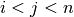), the
metric dist(u=X[i], v=X[j]) is computed and stored in entry ij.
(where 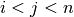), the
metric dist(u=X[i], v=X[j]) is computed and stored in entry ij.See also
- squareform
- converts between condensed distance matrices and square distance matrices.
Notes
See squareform for information on how to calculate the index of this entry or to convert the condensed distance matrix to a redundant square matrix.